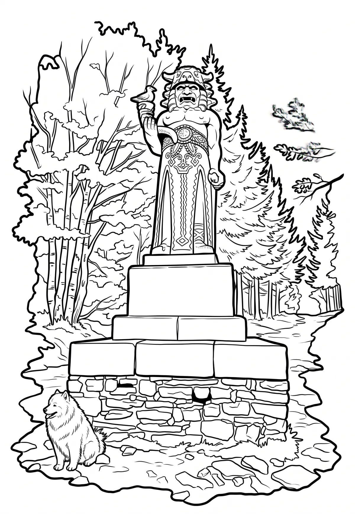

Radhošť
Moravskoslezský kraj · 1129 m n. m.

přírodní památka · #056
Radhošť (moravsky Radhošč) je hora v Moravskoslezských Beskydech na závěru výrazného Pustevenského hřbetu, 3 km jihozápadně od Trojanovic a 6 km severovýchodně od Rožnova pod Radhoštěm. S výškou 1129 m n. m. jde o sedmou nejvyšší horu Moravskoslezských Beskyd a o jejich nejzápadnější tisícovku.